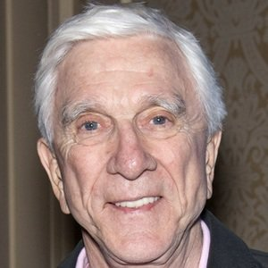
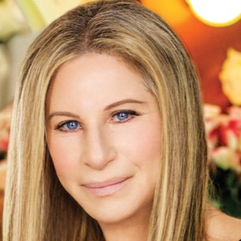

Nosso Grupo
Alexander Miguel Santos
Ele é mestre em biologia de anfíbios pela USP e está fazendo doutorado pela UFMG em conservação animal. Como biólogo, sua linha de pesquisa é a herpetologia urbana com enfoque em Rhinella schneideri.
Maria Glória Paiva
Ela é doutora em taxonomia de anfíbios anuros pela UFPE e mestre em ecologia urbana pela UFPE. Esta bióloga tem um apego pela natureza e por isso enfocou sua carreira na zoologia. Atualmente ela é professora titular da UFRN.
Paulo Macedo Soares
Ele é mestrando pela PPGSE (UFRN) em taxonomia de anuros com enfoque no gênero Rhaebo. Este biólogo está envolvido em projetos de conservação ambiental do IDEMA e do SOS Mata Atlântica.
Nathália Silva Lucas
Ela é doutoranda pelo PRODEMA(UFRN) em conservação ambiental e tem mestrado em taxonomia de fanerógamas (UFMG). Esta bióloga com experiência em sistemática vegetal está envolvida em grupos de permacultura da UFRN.
Idealizadores
Laurindo Gomes Rocha

Ele é biólogo pela UFRN (1975), mestre em ciência ambiental (Cambridge - ENG), em 1982 e doutor em toxicologia (USP) em 1986, e é professor emérito da UFRN desde 2001.
Rafaela Nogueira Lemos

Ela é bióloga pela UFBA (1980), mestre em evolução de anfíbios (UFMG, 1985), doutora em zoologia de vertebrados (USP, 1991), e é professora titular da UFRN desde 1998.